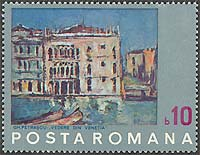
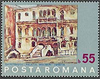
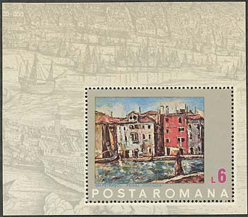
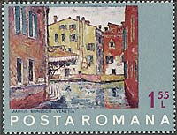
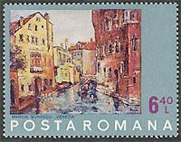

Venice in the Romanian Painting
Dedicated to Venice
Venice exerted an incredible attraction on Romanian artists of all ages and generations. This attraction probably started with the renown sonnet of the greatest Romanian poet, Mihail Eminescu, named simply Venetia. And, thanks also to him, these feelings were transmitted to numberless artists that followed. Please see below the first stanza of the sonnet, in my own (non-poetic) translation:
| S-a stins viata
falnicei Venetii, N-auzi cântari, nu vezi lumini de baluri; Pe scari de marmura, prin vechi portaluri, Patrunde luna, înalbind peretii. |
The life of the
proudly Venice extinguished, You don't hear songs, don't see the lights of balls; On Marmora staircases, through old portals, Penetrates the moon, whitening the walls. |
It is this very moon of my schoolboy years that I sought for, decades later, in my wanderings through the nightly Venice, without really finding something that was actually only the product of my own imagination, triggered by the verses of the great poet. I suppose that the Romanian painters Marius Bunescu, Nicolae Darascu and Gheorghe Petrascu, which works will be presented below, were haunted by some similar ghosts, and then struggled hardly to transmit at least a small part of all lights, feelings and smells specific to this unique place on earth, called Venetia.
 |
 |
Nicolae Darascu was born in Giurgiu, on 18 Feb 1883; he died in Bucharest, on 14 Aug 1959. From 1902 to 1906 he studied painting at the Academy of Fine Arts in Bucharest. He was drawn to Venice, visiting it on many occasions to gain inspiration from the old walls, the effects of light on the water, and the chromatic explosions of the colourful sails of the boats, all of which he depicted with an exuberant affection (e.g. Boats in Venice, 1926–7; Bucharest, N. Mus. A.). From 1936 to 1950 he was a professor at the Fine Arts Academy in Bucharest. Click here to learn more about this painter.
|
 |
 |
Gheorghe Petrascu was born in Tecuci, 1872 and he died in Bucuresti, 1949. His works were on show at the Paris International Exhibition (1937) where he won the Great Prize, the Venice Biennial (1924, 1936, 1938, 1940, 1942, 1946, and posthumously, in 1960). With all that travels could have brought to his cultural experience, the artist's profound attachment to the cultural life of his country was an undeniable reality, to be seen in his paintings' originality.

Among his travel-inspired pictures here are1937; Toledo - Poarta soarelui/Toledo- The Gate of the Sun, 1929; Toledo - Poarta San Martin/Toledo- The San Martin Gate, 1929; Peisaj din Chioggia/A View at Chioggia, 1934, or the splendid pictures with Venetian sights, which distinguish the painter among those who painted the famous town. Click here to learn more about this important Romanian painter.
 |
 |
The painter Marius Bunescu had the longest live of all three painters presented here. Born in 1881 in Constanta, he died at age 90 in Bucharest, Romanian's capital. Venerated art professor, his influence is still alive and is transmitted to present generations by his numerous pupils. A year after his death he was commemorated by two stamps that reproduce his Venice paintings, exposed at the National Art Museum in Bucharest, Romania. These paintings are an example of what he painted in full freedom. When he was obliged by the ambient pressure (of a communist country), he produces for living paintings of workers, like in Construction Site, Romania Scott 2444 (not shown).
The nice stamps presented above were issued by the Romanian post on October 20, 1972, under the name "Save Venice". For more information about the components of this set please point to the individual images with the mouse index.
| Published:
05/18/2002. Revised: 05/20/02. Copyright © 2002 by Victor Manta, Switzerland. All rights reserved worldwide. |